श्रावण 2022 जब परिस्थितियाँ हमारे पक्ष में नहीं थीं
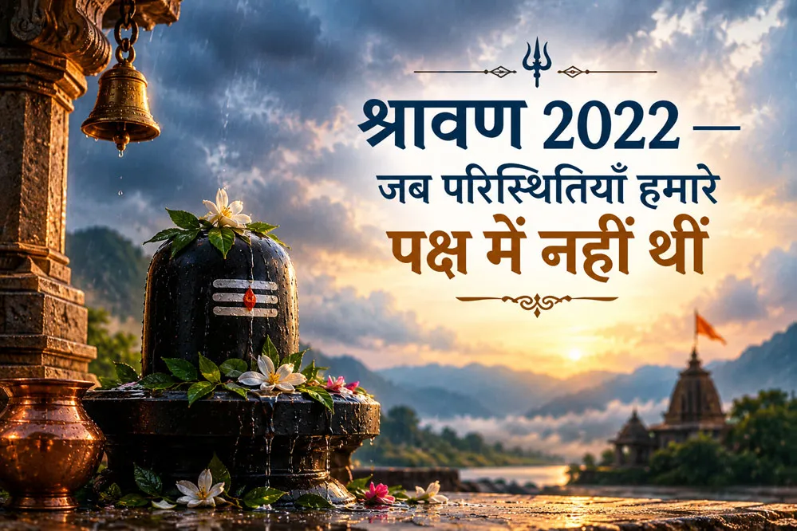
वर्ष 2022 का श्रावण मास था। हमारा परिवार उस समय जीवन के एक कठिन दौर से गुजर रहा था।
आर्थिक परिस्थितियाँ अच्छी नहीं थीं। भविष्य को लेकर कई चिंताएँ थीं और रोजमर्रा की जिंदगी में भी आर्थिक कठिनाइयों का असर दिखाई देता था।
ऐसे समय में मनुष्य अक्सर बहुत कुछ सोचता है। भविष्य कैसा होगा? परिस्थितियाँ कब बदलेंगी? क्या हम कभी उस स्थिति से बाहर निकल पाएँगे?
और सबसे बड़ी बात क्या ईश्वर हमारी प्रार्थना सुन रहे हैं?
हमारे लिए भी वह समय आसान नहीं था। लेकिन भगवान शिव के प्रति श्रद्धा बनी हुई थी।
और फिर एक दिन हमारे घर पर एक ऐसी मुलाकात हुई जिसे आज हम इस पूरी कहानी की पहली महत्वपूर्ण कड़ी के रूप में देखते हैं।
वह दिन जब एक अघोरी बाबा हमारे घर आए
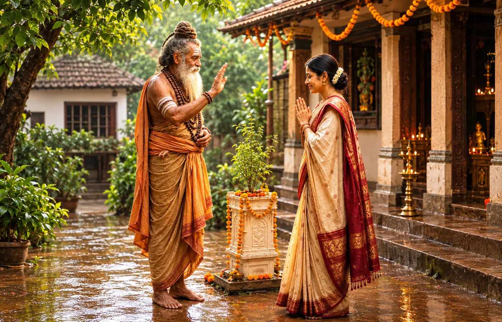
शिवानी सिंह" loading="lazy" style="display: block; margin: 0 auto; max-width: 100%; height: auto;">एक दिन एक अघोरी बाबा हमारे घर आए। वह भिक्षा माँगने के लिए आए थे।
हमारी परिस्थितियाँ ऐसी थीं कि हमारे पास देने के लिए बहुत कुछ नहीं था।
लेकिन शिवानी सिंह ने अपनी श्रद्धा और सामर्थ्य के अनुसार उनका सम्मान किया और जो संभव था, वह उन्हें दिया।
उस समय शायद उन्हें यह पता नहीं था कि यह छोटी-सी मुलाकात आने वाले वर्षों में हमारे जीवन की सबसे महत्वपूर्ण घटनाओं में से एक बन जाएगी।
बाबा ने उन्हें आशीर्वाद दिया।
उन्होंने महाकाल का उल्लेख किया और ऐसी बातें कहीं जिन्होंने शिवानी सिंह के मन पर गहरा प्रभाव डाला।
बाबा ने कहा कि भगवान शिव की कृपा से परिस्थितियाँ बदल सकती हैं।
लेकिन उसके साथ उन्होंने एक प्रश्न भी रखा, यदि जीवन में समृद्धि आए, तो क्या महादेव के लिए एक मंदिर बनाया जाएगा?
उस समय हमारे पास न मंदिर के लिए जमीन थी, न कोई बड़ी योजना और न ही यह पता था कि भविष्य क्या लेकर आने वाला है।
लेकिन शिवानी सिंह ने उस बात को केवल एक साधु के शब्दों की तरह नहीं लिया। उन्होंने उसे अपने मन में रख लिया।
और उन्होंने भगवान शिव के सामने एक वचन लिया
"यदि महादेव की कृपा से परिस्थितियाँ बदलती हैं, तो वह भगवान शिव को समर्पित एक मंदिर बनवाएँगी।"
मूल भोलेनाथ धाम कथा में भी इसी संकल्प को इस यात्रा की शुरुआत के रूप में वर्णित किया गया है। उस समय वह केवल एक संकल्प था।
लेकिन कभी-कभी पूरी जिंदगी बदलने के लिए इतना ही काफी होता है।
क्या एक संकल्प वास्तव में जीवन बदल सकता है?
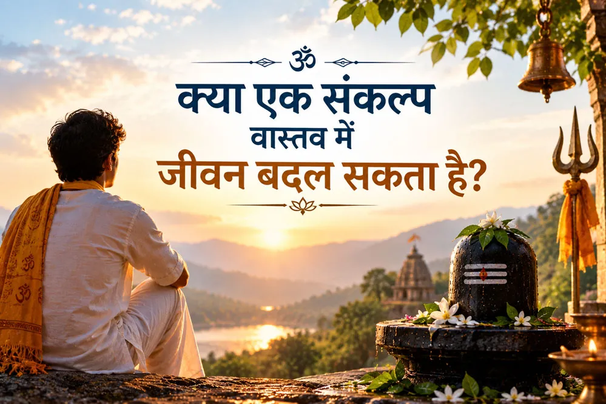
उस समय यह कहना असंभव था कि वह संकल्प कभी पूरा होगा या नहीं। क्योंकि जिस समय संकल्प लिया गया था, उसी समय हमारे सामने आर्थिक कठिनाइयाँ थीं।
मंदिर बनाना तो बहुत दूर की बात लगती थी। लेकिन समय के साथ परिस्थितियाँ बदलने लगीं। धीरे-धीरे नए अवसर आने लगे। जो परेशानियाँ लगातार हमारे सामने थीं, उनमें कमी आने लगी।
और फिर 2023 के अंत तक हमारे परिवार की परिस्थितियों में ऐसा सुधार आया जिसकी उस कठिन समय में कल्पना करना भी आसान नहीं था। मूल वेबसाइट की कथा भी 2023 के अंत तक परिवार की परिस्थितियों में बड़े सुधार का उल्लेख करती है और बताती है कि शिवानी सिंह ने अपना वचन नहीं भुलाया। यहीं से कहानी का अगला अध्याय शुरू हुआ।
अब मंदिर केवल एक सपना नहीं था। अब उसे वास्तविक रूप देने की बात शुरू हो चुकी थी।
संकल्प अब एक वास्तविक योजना बन चुका था
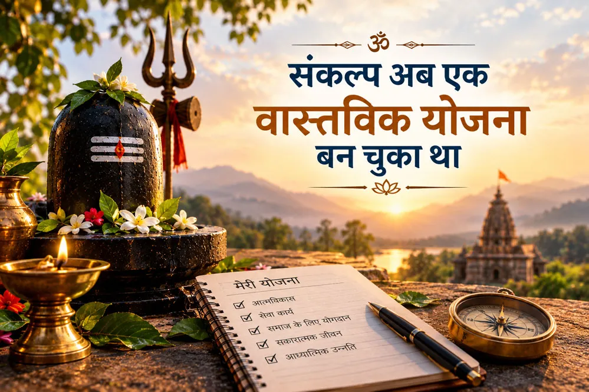
समय बीतता गया। एक मंदिर बनाने का विचार धीरे-धीरे वास्तविक योजना में बदलने लगा।
इसके लिए जमीन की आवश्यकता थी।
और अंततः जमीन लेने की दिशा में कदम आगे बढ़े।
यहाँ से वह यात्रा शुरू हुई जिसने हमें जनवरी 2025 तक पहुँचा दिया।
14 जनवरी 2025
14 जनवरी 2025 को जमीन के लिए पहली बड़ी भुगतान राशि दी गई।
उस दिन हमारे लिए यह केवल जमीन खरीदने की प्रक्रिया का हिस्सा नहीं था।
हम जानते थे कि अब वह संकल्प वास्तविक रूप लेने लगा है।
जिस मंदिर की बात कभी कठिन परिस्थितियों में की गई थी, उसके लिए अब जमीन खरीदी जा रही थी।
एक सपना धीरे-धीरे जमीन पर उतर रहा था।
लेकिन हमें अभी यह नहीं पता था कि आने वाले कुछ महीनों में इस संकल्प की सबसे कठिन परीक्षा होने वाली है।
फिर आया जून–जुलाई 2025
किसी भी बड़े काम की यात्रा हमेशा सीधी नहीं होती। हमने सोचा था कि अब मंदिर निर्माण की दिशा साफ है।
लेकिन जून–जुलाई 2025 के आसपास हमारी आर्थिक परिस्थितियाँ फिर से बहुत खराब हो गईं। व्यवसाय और आर्थिक स्थिति पर दबाव बढ़ गया।
एक समय ऐसा आया जब मुझे लगा कि शायद अब इस जमीन को रखना हमारे लिए संभव नहीं होगा। यह फैसला आसान नहीं था।
क्योंकि जमीन केवल जमीन नहीं थी। उससे एक संकल्प जुड़ा हुआ था। लेकिन वास्तविक जीवन में कभी-कभी परिस्थितियाँ भावनाओं से अधिक कठोर हो जाती हैं।
मैंने सोचना शुरू किया कि शायद हमें यह योजना रोक देनी चाहिए। शायद जमीन छोड़ देनी चाहिए।
शायद जो पैसा दिया गया है, यदि संभव हो तो वापस ले लेना चाहिए।
और आखिरकार मैंने जमीन के ब्रोकर से बात करके यह पूछने का निर्णय लिया कि यदि संभव हो तो भुगतान की गई राशि वापस मिल सकती है या नहीं।
यानी, भोलेनाथ धाम बनने से पहले ही उसे छोड़ देने का विचार हमारे सामने आ चुका था। उस समय मुझे लगा कि शायद यह सपना अब पूरा नहीं हो पाएगा।
मुझे यह भी नहीं पता था कि अगले कुछ दिनों में घटनाएँ किस दिशा में जाने वाली हैं।
फिर लगभग दस–पंद्रह दिन बाद सब कुछ बदल गया
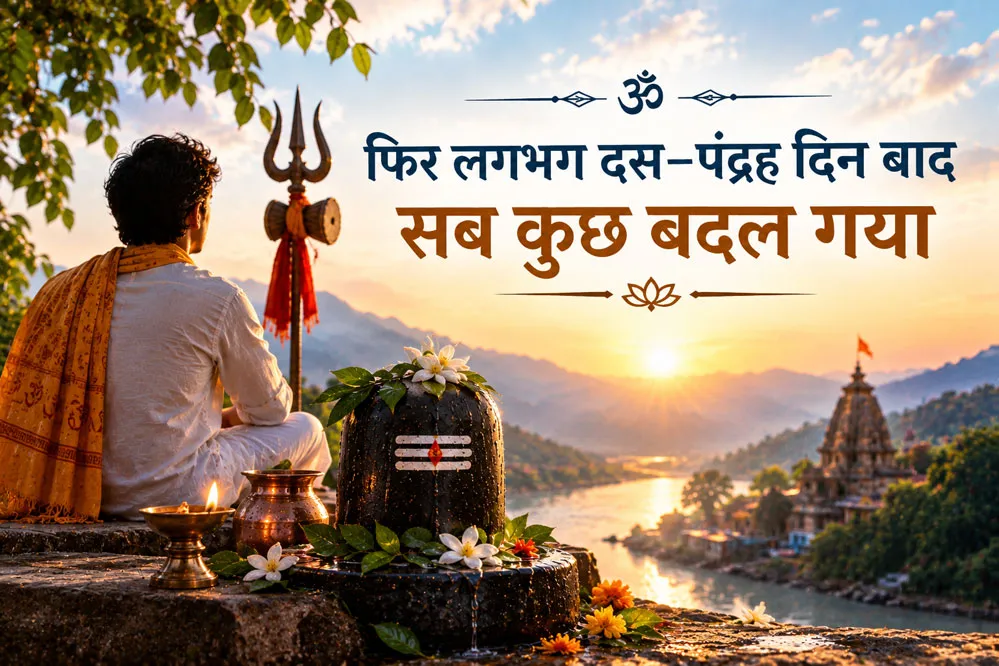
जमीन छोड़ने और पैसा वापस लेने की बात के लगभग दस–पंद्रह दिन बाद शिवानी सिंह अचानक बीमार पड़ गईं।
उनकी तबीयत इतनी खराब हुई कि स्थिति बहुत गंभीर हो गई। उन्हें अस्पताल में भर्ती करना पड़ा। ऐसे समय में जीवन की बाकी सारी बातें अचानक छोटी लगने लगती हैं।
व्यवसाय।
पैसा।
जमीन।
मंदिर।
भविष्य।
इन सबके ऊपर उस समय केवल एक चिंता थी
शिवानी सिंह ठीक होंगी या नहीं? मैं उनके साथ था। और जो कुछ उस समय हुआ, उसे मैंने स्वयं देखा और महसूस किया।
लेकिन अस्पताल में रहते हुए उन्होंने मुझसे ऐसी बात कही जिसने मेरे सोचने का तरीका बदल दिया।
अस्पताल के बिस्तर पर शिवानी सिंह की वह बात
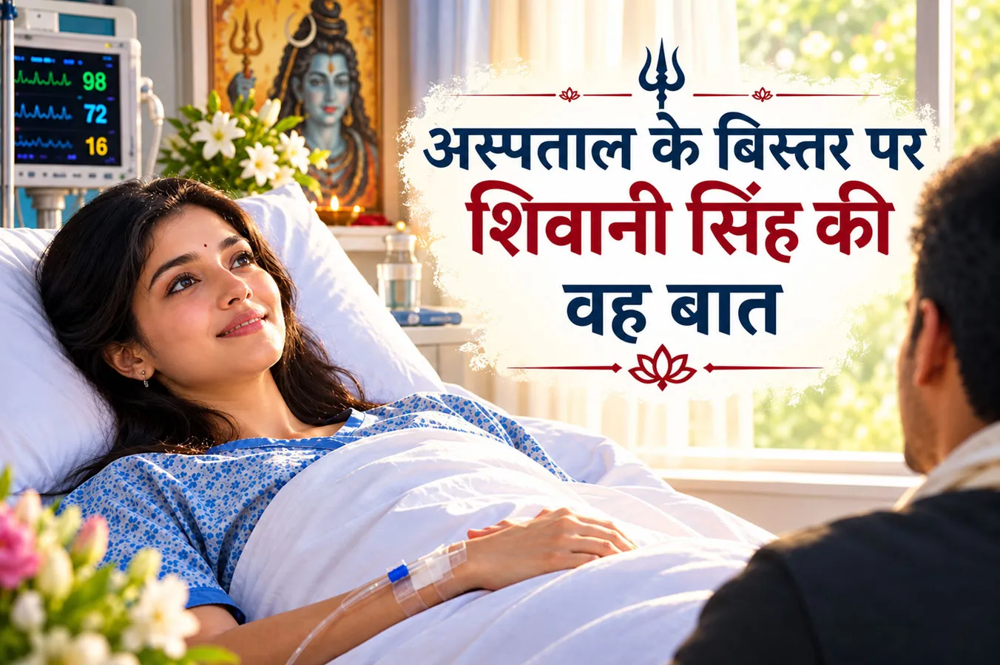
उन्होंने मुझसे कहा
“मंदिर बनाने का संकल्प मत छोड़िए।”
मैंने उनकी ओर देखा। परिस्थितियाँ हमारे सामने थीं। आर्थिक समस्या थी। हम जमीन छोड़ने की बात कर चुके थे।
और वह स्वयं गंभीर रूप से बीमार थीं। लेकिन उन्होंने आगे कहा कि जब से वह अस्पताल में हैं, उन्हें हर दिन सपने में भगवान शिव का मंदिर दिखाई दे रहा है।
यह बात मेरे लिए बहुत गहरी थी। क्योंकि कुछ दिन पहले तक मैं सोच रहा था कि मंदिर की योजना छोड़ देनी चाहिए।
और अब मेरी पत्नी अस्पताल में थी, गंभीर रूप से बीमार थी, लेकिन उसके मन में सबसे बड़ी चिंता यही थी कि
हम मंदिर का संकल्प न छोड़ें। उस क्षण मेरे भीतर बहुत कुछ चल रहा था।
मैं कुछ समय तक चुप रहा।
वह कुछ मिनट जिन्होंने पूरी दिशा बदल दी
मैंने उस समय बहुत सोचा। एक तरफ वास्तविक परिस्थितियाँ थीं। आर्थिक कठिनाइयाँ थीं।
जमीन का भुगतान था। आगे का निर्माण था। और दूसरी तरफ मेरी पत्नी का वह विश्वास था जिसे उसने 2022 में लिया था और अब अपनी गंभीर बीमारी के बीच भी नहीं छोड़ा था।
मैंने अंततः निर्णय लिया। अगर हमने यह संकल्प लिया है, तो अब पीछे नहीं हटेंगे। चाहे रास्ता कितना भी कठिन क्यों न हो।
चाहे हमें कितना भी त्याग क्यों न करना पड़े। चाहे आर्थिक रूप से कितनी भी परेशानी क्यों न आए।
"मंदिर बनेगा।"
लेकिन केवल मन में निर्णय लेने से मेरे भीतर की बेचैनी दूर नहीं हुई।
मुझे लगा कि मुझे स्वयं भगवान शिव के सामने जाकर अपना सिर झुकाना चाहिए।
मैं भगवान शिव के सामने गया
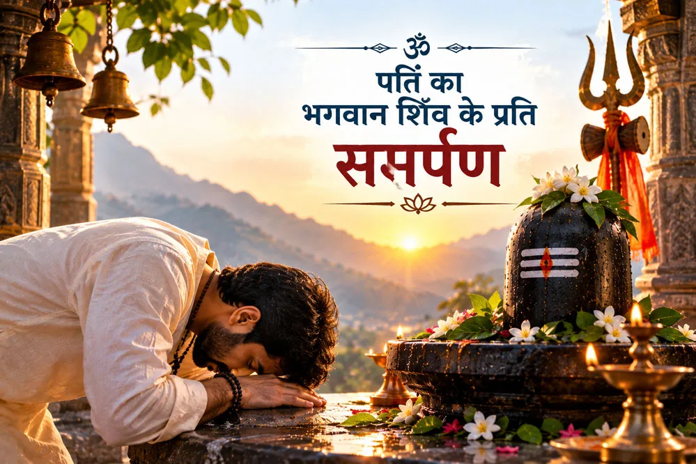
मैं अपने क्षेत्र के एक शिव मंदिर में गया। वहाँ जाकर मैंने भगवान शिव के सामने स्वयं को समर्पित किया।
मैंने अपने मन की सारी बातें महादेव के सामने रखीं। मैंने क्षमा माँगी।
और फिर मैंने एक नया वचन लिया। मैंने मन में कहा
“जो भी हो, हम यह मंदिर बनाएँगे।”
मैंने यह भी तय किया कि अगर जरूरत पड़ी तो हम अपने जीवन के खर्चों में कटौती करेंगे।
जरूरत पड़ी तो रात के खाने तक में कमी करेंगे। लेकिन मंदिर के लिए बचत करेंगे।
क्योंकि अब यह केवल एक योजना नहीं रह गई थी। यह हमारे लिए एक वचन था।
एक ऐसा वचन जिसे हमने भगवान शिव के सामने दोबारा स्वीकार किया था।
उस दिन मेरे मन में केवल एक बात थी
मंदिर का काम किसी भी हालत में नहीं रुकेगा।
और फिर शिवानी सिंह घर वापस आईं
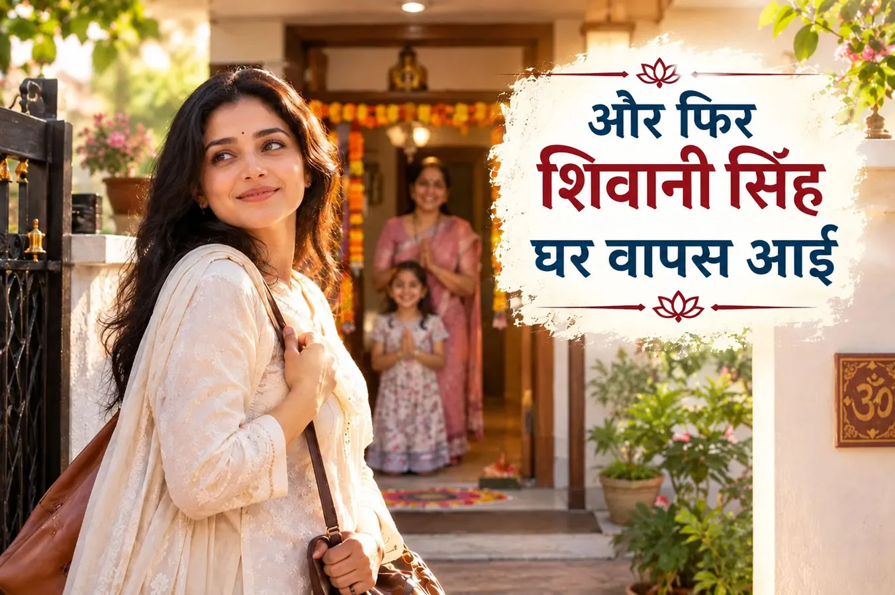
कुछ ही दिनों में परिस्थितियाँ बदलने लगीं।
शिवानी सिंह की तबीयत सुधरने लगी। जो स्थिति कुछ समय पहले बहुत गंभीर हो गई थी, उससे वह उबरने लगीं।
और अंततः वह घर वापस आईं। आज भी जब मैं उस समय को याद करता हूँ, तो मेरे लिए वह हमारी पूरी यात्रा का सबसे भावनात्मक अध्याय है।
क्योंकि कुछ ही समय पहले हम मंदिर की जमीन छोड़ने की बात कर रहे थे। फिर मेरी पत्नी गंभीर रूप से बीमार हो गईं।
अस्पताल में उन्होंने मंदिर का संकल्प न छोड़ने की बात कही।
"मैं शिव मंदिर गया।"
मैंने महादेव के सामने अपना निर्णय दोहराया। और फिर वह ठीक होकर घर वापस आईं।
लेकिन कहानी अभी समाप्त नहीं हुई थी।
असल में, उसके बाद घटनाएँ और तेजी से आगे बढ़ीं।
सितंबर 2025 - परिस्थितियों में फिर आया बदलाव
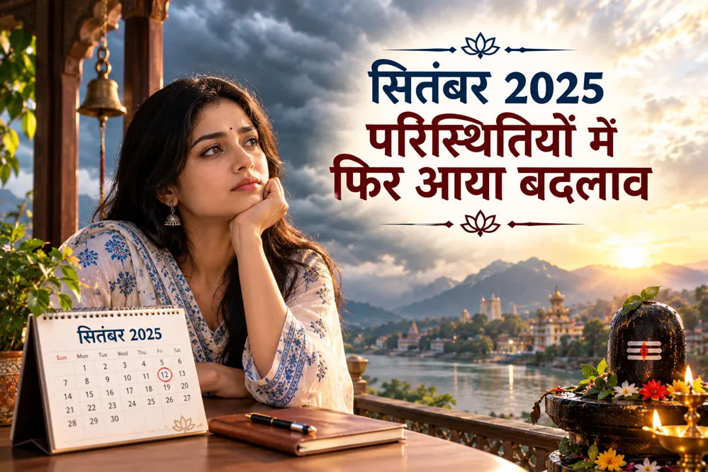
सितंबर 2025 में मेरे व्यवसाय में बहुत अच्छा लाभ हुआ। उस समय हमारे लिए यह बहुत महत्वपूर्ण था।
क्योंकि कुछ महीने पहले तक हम जमीन छोड़ने और भुगतान वापस लेने की स्थिति में पहुँच चुके थे। अब परिस्थितियाँ फिर से हमारे पक्ष में आने लगी थीं।
मैं इसे अपने जीवन में हुई घटनाओं के क्रम के रूप में देखता हूँ। मैंने जो देखा, उसे भूलना मेरे लिए संभव नहीं है।
पहले कठिनाई।
फिर जमीन छोड़ने का विचार।
फिर पत्नी की गंभीर बीमारी।
फिर मंदिर का संकल्प दोबारा लेना।
फिर उनकी रिकवरी।
और उसके बाद व्यवसाय में अच्छा लाभ।
अब मंदिर की जमीन का काम फिर आगे बढ़ सकता था।
अक्टूबर 2025 जमीन का पूरा भुगतान
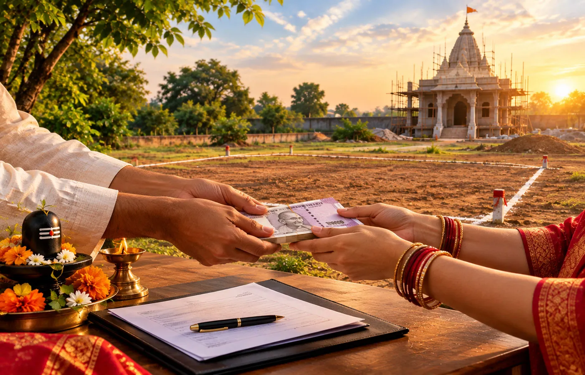
सितंबर के बाद हमने मंदिर की जमीन के लिए बाकी भुगतान पूरा करने की दिशा में कदम बढ़ाया।
और अक्टूबर 2025 में जमीन का पूरा भुगतान कर दिया गया।
"यह हमारे लिए बहुत बड़ा क्षण था।"
क्योंकि कुछ ही महीने पहले वही जमीन छोड़ने की बात चल रही थी।
अब वही जमीन उस मंदिर की आधारभूमि बनने जा रही थी जिसका संकल्प वर्षों पहले लिया गया था।
हमने उस समय शायद यह नहीं सोचा होगा कि जनवरी से अक्टूबर तक की यह यात्रा हमें इतनी कठिन परीक्षा से गुजार चुकी है।
लेकिन अब रास्ता फिर साफ दिखाई दे रहा था।
नवंबर 2025 जमीन की रजिस्ट्री
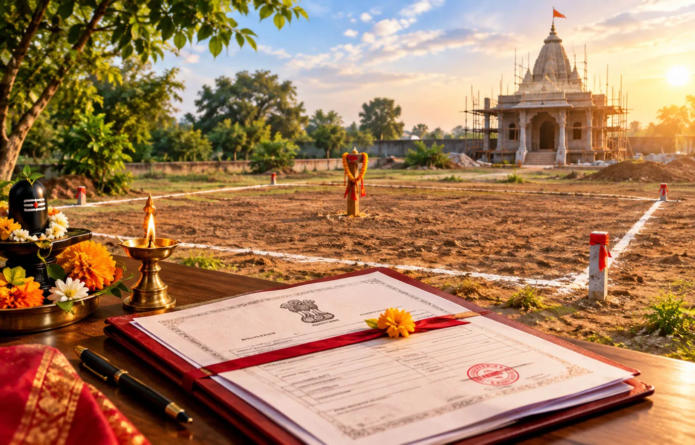
फिर आया नवंबर 2025।
जमीन की रजिस्ट्री पूरी हुई।
अब वह भूमि वास्तव में उस संकल्प के लिए हमारे सामने थी।
जिस जमीन को पाने के लिए हमने भुगतान किया था, जिसके लिए हमने संघर्ष किया था और जिसे एक समय छोड़ देने का विचार किया था
अब वह मंदिर निर्माण के लिए हमारे पास थी।
लेकिन सबसे खास बात अभी बाकी थी।
रजिस्ट्री के उसी दिन शुरू हुआ मंदिर का निर्माण
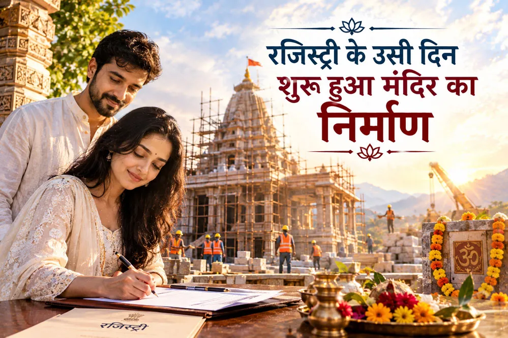
नवंबर 2025 में जमीन की रजिस्ट्री हुई और उसी दिन मंदिर का निर्माण कार्य भी शुरू कर दिया गया।
मेरे लिए इस बात का महत्व शब्दों में बताना आसान नहीं है। क्योंकि मैंने उस पूरी यात्रा को देखा था।
• 14 जनवरी 2025 को पहली भुगतान राशि।
• फिर जून–जुलाई में आर्थिक संकट।
"फिर जमीन छोड़ने का विचार।"
• फिर शिवानी सिंह की गंभीर बीमारी।
• अस्पताल में उनका मंदिर का सपना देखना।
• उनका कहना कि संकल्प मत छोड़िए।
• मेरा शिव मंदिर जाकर क्षमा माँगना।
• मेरा दोबारा संकल्प लेना।
• उनका स्वस्थ होकर घर लौटना।
• सितंबर में व्यवसाय में अच्छा लाभ।
• अक्टूबर में जमीन का पूरा भुगतान।
• नवंबर में रजिस्ट्री।
और फिर
उसी दिन निर्माण शुरू।
एक साल से भी कम समय में यह यात्रा कितने मोड़ों से गुजरी थी।
जब संकल्प ने रूप लेना शुरू किया।

हर पड़ाव एक नई जिम्मेदारी।
आज जब कोई व्यक्ति भोलेनाथ धाम को देखता है, तो उसे मंदिर दिखाई देता है।
उसे शायद सुंदर परिसर दिखाई देता है।
उसे भगवान शिव का धाम दिखाई देता है।
• लेकिन उस मंदिर के पीछे की पूरी यात्रा शायद उसे दिखाई नहीं देती।
• उसे वह श्रावण 2022 नहीं दिखाई देता जब हमारा परिवार कठिन आर्थिक परिस्थिति से गुजर रहा था।
• उसे वह अघोरी बाबा नहीं दिखाई देते जो हमारे घर आए थे।
• उसे वह संकल्प दिखाई नहीं देता जो शिवानी सिंह ने लिया था।
• उसे 14 जनवरी 2025 दिखाई नहीं देता।
• उसे वह जून–जुलाई 2025 नहीं दिखाई देता जब हमें लगा था कि शायद जमीन छोड़नी पड़ेगी।
• उसे अस्पताल का वह कमरा दिखाई नहीं देता जहाँ मेरी पत्नी ने कहा था
“मंदिर का संकल्प मत छोड़िए।”
• उसे वह शिव मंदिर दिखाई नहीं देता जहाँ मैंने जाकर स्वयं को महादेव के सामने समर्पित किया था।
• और उसे वह दिन भी दिखाई नहीं देता जब रजिस्ट्री के साथ उसी दिन मंदिर का निर्माण शुरू हुआ।
लेकिन यही सब मिलकर भोलेनाथ धाम की असली कहानी बनाते हैं।
एक संकल्प की सबसे कठिन परीक्षा
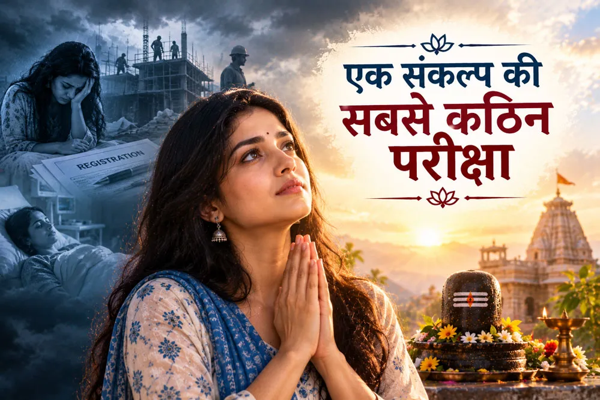
हम अक्सर कहते हैं कि भगवान के सामने लिया गया संकल्प निभाना चाहिए।
लेकिन संकल्प निभाने की वास्तविक परीक्षा तब होती है जब परिस्थितियाँ हमारे विरुद्ध चली जाएँ। 2022 में संकल्प लेना एक बात थी।
लेकिन 2025 में, जब जमीन के लिए भुगतान हो चुका था और फिर आर्थिक परिस्थितियाँ बिगड़ गईं, तब उस संकल्प को निभाना कहीं अधिक कठिन था।
• उस समय हम चाहें तो पीछे हट सकते थे।
• जमीन छोड़ सकते थे।
• पैसा वापस माँग सकते थे।
• और यह कह सकते थे कि परिस्थितियाँ हमारे हाथ में नहीं हैं।
लेकिन हमने ऐसा नहीं किया।
और इस निर्णय में शिवानी सिंह की भूमिका सबसे महत्वपूर्ण रही।
क्योंकि जब मैं स्वयं परिस्थितियों के दबाव में मंदिर की योजना छोड़ने के बारे में सोच रहा था, तब वह अस्पताल में थीं और फिर भी मंदिर का संकल्प न छोड़ने की बात कर रही थीं।
शिवानी सिंह के सपनों में दिखाई देने वाला मंदिर
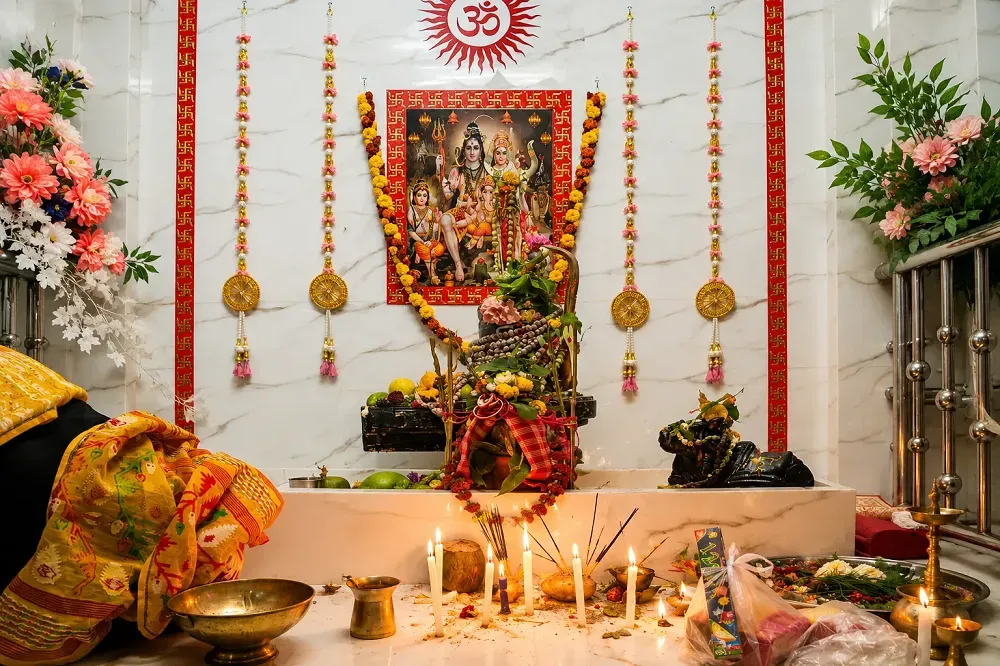
उनका यह कहना कि अस्पताल में उन्हें हर दिन भगवान शिव का मंदिर सपने में दिखाई दे रहा था, इस पूरी कहानी का एक बहुत व्यक्तिगत हिस्सा है।
मैं इस अनुभव को किसी वैज्ञानिक या बाहरी प्रमाण के रूप में प्रस्तुत नहीं करता।
मैं केवल वही बता रहा हूँ जो उन्होंने मुझे बताया और जो मैंने स्वयं उस समय सुना।
उनके लिए वह अनुभव बहुत वास्तविक था।
और उस समय उनके मन में मंदिर की बात इतनी मजबूत थी कि बीमारी की गंभीर अवस्था में भी उन्होंने मुझे मंदिर की योजना छोड़ने से मना किया।
शायद यही वह क्षण था जिसने मेरे भीतर भी निर्णय को अंतिम रूप दिया।
कभी-कभी विश्वास का अर्थ परिणाम जानना नहीं होता
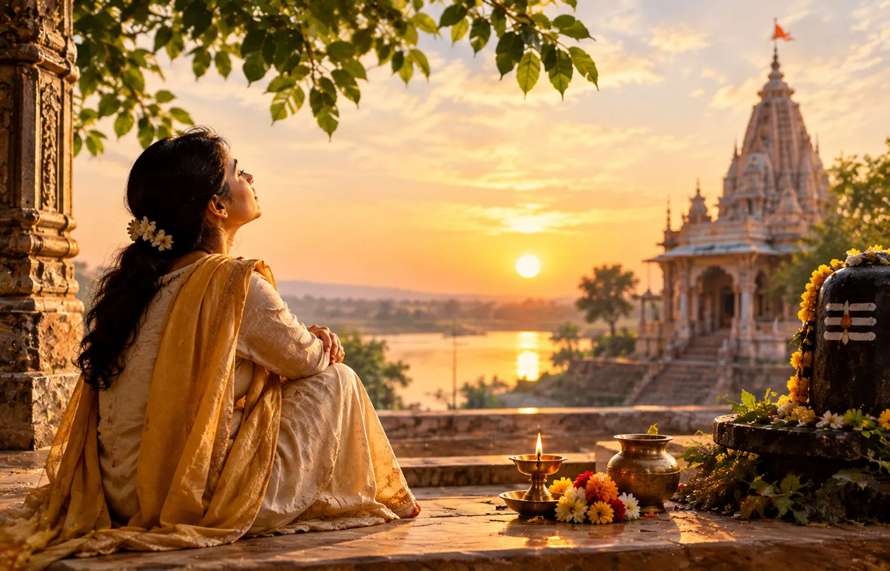
जब मैंने शिव मंदिर में जाकर अपना सिर झुकाया, तब मुझे यह नहीं पता था कि सितंबर में व्यवसाय में अच्छा लाभ होगा। मुझे यह नहीं पता था कि अक्टूबर में जमीन का पूरा भुगतान हो जाएगा।
मुझे यह भी नहीं पता था कि नवंबर में रजिस्ट्री हो जाएगी और उसी दिन निर्माण शुरू हो जाएगा। उस समय मेरे पास कोई निश्चित भविष्यवाणी नहीं थी।
मेरे पास केवल एक निर्णय था
"पीछे नहीं हटना है।"
यही शायद विश्वास का सबसे कठिन रूप है।
परिणाम पहले दिखाई न दे, फिर भी कदम आगे बढ़ाना।
भोलेनाथ धाम का निर्माण
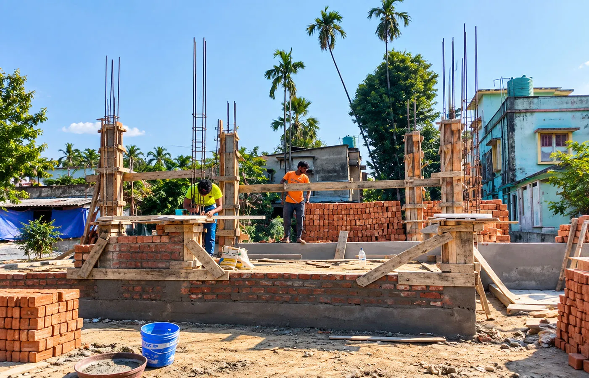
इसके बाद मंदिर निर्माण की यात्रा आगे बढ़ी।
जो बात कभी एक वचन थी, अब वह वास्तविक निर्माण में बदल चुकी थी।
हर निर्माण अपने साथ अनेक काम और जिम्मेदारियाँ लेकर आता है।
लेकिन हमारे लिए हर कदम का एक अलग अर्थ था।
क्योंकि हम जानते थे कि यह केवल कोई सामान्य निर्माण परियोजना नहीं है।
• इसके पीछे एक कहानी थी।
• एक आस्था थी।
• एक वचन था।
• और उस वचन को पूरा करने की जिम्मेदारी थी।
मूल भोलेनाथ धाम कथा भी मंदिर को केवल पत्थर और संगमरमर की संरचना नहीं, बल्कि आस्था, महाकाल की कृपा, वचन निभाने और कृतज्ञता से जुड़ी जीवित स्मृति के रूप में प्रस्तुत करती है।
15 फरवरी 2026 - वह दिन जब सपना धाम बन गया
कई महीनों की तैयारी और निर्माण के बाद आखिर वह दिन आया जिसका इंतजार था।
15 फरवरी 2026
भोलेनाथ धाम का आधिकारिक उद्घाटन हुआ।
उस दिन केवल एक मंदिर का उद्घाटन नहीं हुआ।
हमारे लिए वह उस पूरी यात्रा का एक महत्वपूर्ण पड़ाव था।
श्रावण 2022 से शुरू हुई कहानी यहाँ तक पहुँच चुकी थी।
• एक अघोरी बाबा के आगमन से शुरू हुई बात।
• एक महिला का संकल्प।
• कठिन आर्थिक परिस्थितियाँ।
• 2023 में आया परिवर्तन।
• 2025 में जमीन की तलाश और भुगतान।
• फिर संकट।
• फिर अस्पताल।
• फिर शिव मंदिर में लिया गया नया संकल्प।
• फिर परिस्थितियों का बदलना।
• और अंततः
भोलेनाथ धाम
लेकिन मेरे लिए कहानी का असली अर्थ क्या है?
आज जब मैं पीछे मुड़कर देखता हूँ, तो मेरे लिए यह केवल मंदिर की कहानी नहीं है।
यह मेरी पत्नी की आस्था की कहानी भी है।
क्योंकि अगर वह अस्पताल में उस समय यह न कहतीं कि मंदिर का संकल्प मत छोड़िए, तो शायद मैं भी उस समय अपने निर्णय पर कायम न रह पाता।
उन्होंने बीमारी के बीच भी उस वचन को याद रखा।
उन्होंने उस संकल्प को केवल कठिन समय की भावना नहीं माना।
उनके लिए वह कुछ ऐसा था जिसे पूरा करना था।
और शायद इसी कारण यह कहानी हमारे परिवार के लिए हमेशा विशेष रहेगी।
शिवानी सिंह इस यात्रा का केंद्र
भोलेनाथ धाम की कहानी में बहुत से लोग आए होंगे।
निर्माण में अनेक लोगों ने योगदान दिया होगा।
लेकिन इस कहानी की शुरुआत जिस संकल्प से हुई, उसके केंद्र में शिवानी सिंह थीं।
• 2022 में उन्होंने संकल्प लिया।
• 2023 तक परिस्थितियाँ बदलीं।
• 2025 में जमीन के लिए भुगतान हुआ।
• फिर सबसे कठिन समय आया।
• उन्होंने बीमारी के बीच भी मंदिर का सपना नहीं छोड़ा।
• और अंततः 2026 में वही संकल्प एक वास्तविक धाम के रूप में सामने आया।
इसलिए मेरे लिए भोलेनाथ धाम को समझने का अर्थ केवल मंदिर को देखना नहीं है।
उस महिला के विश्वास को समझना भी है जिसने उस मंदिर के विचार को अपने मन में जीवित रखा।
क्या यह केवल संयोग था?
इस कहानी को पढ़ने वाला हर व्यक्ति इन घटनाओं का अर्थ अपने तरीके से समझ सकता है।
कोई इसे आस्था की शक्ति के रूप में देख सकता है।
कोई इसे संकल्प की शक्ति कह सकता है।
कोई इसे कठिन परिस्थितियों के बीच सही समय पर लिए गए निर्णयों की श्रृंखला मान सकता है।
और कोई इसे भगवान शिव की कृपा के रूप में अनुभव कर सकता है।
मैं किसी पाठक पर कोई निष्कर्ष थोपना नहीं चाहता।
मैं केवल इतना कह सकता हूँ
मैं इन घटनाओं का साक्षी रहा हूँ।
• मैंने वह कठिन समय देखा।
• मैंने जमीन छोड़ने का विचार देखा।
• मैंने अपनी पत्नी को अस्पताल में देखा।
• मैंने उनकी बात सुनी।
• मैं स्वयं शिव मंदिर गया।
• मैंने वह संकल्प दोबारा लिया।
• मैंने उनकी रिकवरी देखी।
• मैंने सितंबर 2025 का व्यवसायिक लाभ देखा।
• मैंने अक्टूबर में जमीन का पूरा भुगतान होते देखा।
• मैंने नवंबर में रजिस्ट्री होते देखी।
• और मैंने उसी दिन मंदिर निर्माण शुरू होते देखा।
इन घटनाओं का आध्यात्मिक अर्थ क्या है, यह प्रत्येक व्यक्ति अपने हृदय से तय कर सकता है।
लेकिन हमारे लिए यह सब हमारी जिंदगी का हिस्सा है।
एक मंदिर से कहीं अधिक
आज भोलेनाथ धाम केवल हमारे परिवार की स्मृति नहीं है।
यह उन सभी लोगों के लिए एक स्थान है जो भगवान शिव के प्रति श्रद्धा रखते हैं।
• एक ऐसा स्थान जहाँ भक्त आ सकते हैं।
• भगवान शिव का स्मरण कर सकते हैं।
• प्रार्थना कर सकते हैं।
• और अपने जीवन की परेशानियों के बीच कुछ समय के लिए स्वयं को महादेव के चरणों में समर्पित कर सकते हैं।
मूल वेबसाइट भी इसी भावना को सामने रखती है कि आने वाला प्रत्येक भक्त इस यात्रा का हिस्सा बनता है।
अगर उस दिन हमने हार मान ली होती तो?
कभी-कभी मैं स्वयं इस प्रश्न के बारे में सोचता हूँ।
👉 अगर जून–जुलाई 2025 में हमने जमीन छोड़ दी होती तो?
👉 अगर हमने ब्रोकर से पैसा वापस ले लिया होता तो?
👉 अगर शिवानी सिंह ने अस्पताल में मंदिर का संकल्प याद न दिलाया होता तो?
👉 अगर मैं शिव मंदिर जाकर दोबारा वचन न लेता तो?
👉 अगर सितंबर में मिले अच्छे अवसर के बाद हमने फिर से आगे बढ़ने का निर्णय न लिया होता तो?
शायद आज भोलेनाथ धाम इस रूप में हमारे सामने नहीं होता।
इसीलिए उस कठिन समय को याद करना जरूरी है।
क्योंकि वही समय बताता है कि किसी संकल्प की असली कीमत तब पता चलती है जब उसे पूरा करना आसान नहीं होता।
14 जनवरी से 15 फरवरी तक की पूरी यात्रा
अगर इस कहानी को केवल तारीखों में देखा जाए, तो शायद यह बहुत साधारण लगे।
लेकिन हर तारीख के पीछे एक अलग भावना थी।
• 14 जनवरी 2025 - जमीन के लिए पहला भुगतान।
• जून–जुलाई 2025 - आर्थिक संकट और जमीन छोड़ने का विचार।
• लगभग 10–15 - दिन बाद शिवानी सिंह की गंभीर बीमारी और अस्पताल में भर्ती होना।
• अस्पताल में - उनका मंदिर का सपना देखना और मंदिर का संकल्प न छोड़ने की बात कहना।
• इसके बाद - मेरा शिव मंदिर जाकर महादेव के सामने समर्पण और नया वचन।
• कुछ ही दिनों बाद - शिवानी सिंह का स्वस्थ होकर घर लौटना।
• सितंबर 2025 - व्यवसाय में अच्छा लाभ।
• अक्टूबर 2025 - जमीन का पूरा भुगतान।
• नवंबर 2025 - जमीन की रजिस्ट्री।
• उसी दिन - मंदिर निर्माण की शुरुआत।
• 15 फरवरी 2026 - भोलेनाथ धाम का उद्घाटन।
जब इन घटनाओं को एक साथ देखा जाता है, तो यह केवल तारीखों की सूची नहीं रह जाती।
यह एक यात्रा बन जाती है।
यह कहानी हम क्यों साझा कर रहे हैं?
किसी भी निजी अनुभव को सार्वजनिक रूप से साझा करने का एक कारण होना चाहिए।
हम यह कहानी इसलिए नहीं बता रहे कि हर व्यक्ति इन घटनाओं को उसी तरह समझे जैसे हमने समझा।
हम इसे इसलिए साझा कर रहे हैं क्योंकि भारत की आध्यात्मिक परंपरा में ऐसी व्यक्तिगत आस्था-कथाओं का अपना महत्व है।
• किसी व्यक्ति की प्रार्थना।
• किसी परिवार का संकल्प।
• किसी मंदिर के निर्माण के पीछे की भावना।
• किसी कठिन समय में लिया गया निर्णय।
ये बातें आने वाली पीढ़ियों के लिए भी स्मृति बन सकती हैं।
भोलेनाथ धाम की कहानी भी हमारे लिए ऐसी ही एक स्मृति है।
एक संकल्प जो अब भक्तों के सामने है
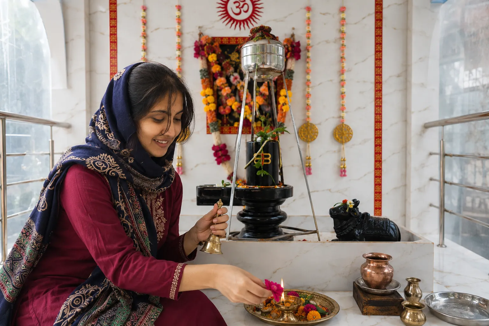
जब शिवानी सिंह ने 2022 में वह वचन लिया था, तब शायद उन्होंने भी नहीं सोचा होगा कि कुछ वर्षों बाद उस संकल्प का परिणाम एक वास्तविक मंदिर होगा।
लेकिन आज भोलेनाथ धाम मौजूद है।
• एक स्थान के रूप में।
• एक स्मृति के रूप में।
• एक भक्ति केंद्र के रूप में।
• और हमारे परिवार के लिए
एक वचन के पूरा होने की याद के रूप में।
मेरी पत्नी से शुरू हुई यह कहानी अब भक्तों की भी है
जब कोई मंदिर केवल परिवार के लिए बनाया जाता है, तो वह निजी स्थान रह सकता है।
लेकिन जब उसके द्वार भक्तों के लिए खुलते हैं, तो उसकी कहानी बदल जाती है।
अब उसमें आने वाला हर भक्त अपनी प्रार्थना लेकर आता है।
कोई सुख माँगता है।
कोई शांति।
कोई अपने परिवार के लिए मंगलकामना करता है।
कोई अपनी परेशानी लेकर आता है।
और कोई केवल भगवान शिव के सामने कुछ क्षण चुपचाप खड़ा होना चाहता है।
यही कारण है कि आज हमारे लिए भोलेनाथ धाम की यात्रा समाप्त नहीं हुई है।
15 फरवरी 2026 केवल उद्घाटन था।
आगे की यात्रा अब भक्तों के साथ है।
भोलेनाथ धाम - एक जीवित स्मृति

किसी मंदिर की सबसे बड़ी सुंदरता केवल उसकी संरचना में नहीं होती।
उसकी सबसे बड़ी सुंदरता उन भावनाओं में होती है जो उसे जन्म देती हैं।
भोलेनाथ धाम के पीछे
एक कठिन समय था।
एक अघोरी बाबा का आगमन था।
एक आशीर्वाद था।
एक संकल्प था।
फिर परिस्थितियों का बदलना था।
फिर जमीन की तलाश थी।
फिर आर्थिक संकट था।
फिर लगभग हार मान लेने का क्षण था।
फिर अस्पताल था।
फिर एक सपना था।
फिर मेरी पत्नी की आवाज थी
“मंदिर का संकल्प मत छोड़िए।”
फिर महादेव के सामने मेरा समर्पण था।
फिर एक नया वचन था।
फिर बीमारी से बाहर आती मेरी पत्नी थी।
फिर सितंबर का अच्छा समय था।
फिर अक्टूबर में पूरा भुगतान।
फिर नवंबर में रजिस्ट्री।
और उसी दिन शुरू हुआ निर्माण।
और अंत में
15 फरवरी 2026
भोलेनाथ धाम।
अंत में केवल इतना...
मैं नहीं जानता कि इस पूरी कहानी को पढ़ने वाला प्रत्येक व्यक्ति इसे किस दृष्टि से देखेगा।
लेकिन मैं यह जानता हूँ कि मेरे लिए यह कोई सुनी-सुनाई कहानी नहीं है।
मैं इस यात्रा का साक्षी हूँ।
मैंने कठिन समय देखा है।
मैंने वह समय देखा है जब मंदिर का सपना छोड़ने का विचार आया।
मैंने अपनी पत्नी को अस्पताल में देखा है।
मैंने उनकी आँखों और शब्दों में उस संकल्प को देखा है।
मैंने भगवान शिव के सामने स्वयं को समर्पित किया है।
मैंने वह वचन लिया है कि परिस्थितियाँ चाहे जैसी हों, मंदिर बनाया जाएगा।
और मैंने फिर धीरे-धीरे उस वचन को वास्तविक रूप लेते देखा है।
आज जब भोलेनाथ धाम हमारे सामने है, तो मुझे सबसे पहले वह मंदिर नहीं दिखाई देता।
मुझे वह संकल्प दिखाई देता है।
मुझे वह विश्वास दिखाई देता है।
मुझे वह कठिन समय दिखाई देता है।
और मुझे वह क्षण याद आता है, जब लगा था कि शायद यह सब कभी नहीं हो पाएगा।
फिर मैं वर्तमान को देखता हूँ।
और मन में केवल एक ही भाव आता है
जिस वचन को महादेव के चरणों में रखा गया था, उसे निभाने का अवसर मिला, यही हमारे लिए सबसे बड़ी कृपा है।
हर हर महादेव। 🔱
भोलेनाथ धाम के बारे में
भोलेनाथ धाम भगवान शिव को समर्पित एक पवित्र धाम है। मुख्य वेबसाइट पर मंदिर से जुड़ी जानकारी के साथ भगवान शिव, शिव पुराण, शिव मंत्र, शिव पूजा, ज्योतिर्लिंग, साधना, ध्यान, शिव के विभिन्न स्वरूपों और अनेक आध्यात्मिक विषयों पर विस्तृत सामग्री उपलब्ध है। मुख्य वेबसाइट पर प्रकाशित कहानी भोलेनाथ धाम को आस्था, कृतज्ञता, वचनबद्धता और भक्ति की यात्रा से जोड़ती है।
जिस वचन को महादेव के चरणों में रखा गया था, उसे निभाने का अवसर मिला यही हमारे लिए सबसे बड़ी कृपा है।
यदि आप इस कहानी को पढ़ने के बाद भोलेनाथ धाम की पूरी यात्रा, मंदिर की जानकारी और भगवान शिव से जुड़े विस्तृत आध्यात्मिक विषय पढ़ना चाहते हैं, तो मुख्य वेबसाइट पर जाएँ:
🔱 भोलेनाथ धाम • Bholenath Dham Website
हर हर महादेव। 🔱
और फिर समझ आया - यात्रा अभी बाकी है।
किसी संकल्प के पूरा होने का अर्थ हमेशा कहानी का अंत नहीं होता। कई बार वह एक नई शुरुआत होती है। जो बना, उसे संभालना होता है। जो मिला, उसे बाँटना होता है। और जो रास्ता खुला, उस पर आगे चलना होता है।
इसलिए यह कहानी केवल उस क्षण की कहानी नहीं है जब एक विचार ने जन्म लिया। यह उन सभी कदमों की कहानी है जो उसके बाद आए—और उन कदमों की भी, जो अभी आने बाकी हैं।
शायद इसी वजह से एक संकल्प को केवल एक लक्ष्य कहना कम होगा। वह एक यात्रा है। एक विश्वास है। और कई बार, किसी दूसरे व्यक्ति के लिए उम्मीद की एक छोटी-सी वजह भी।